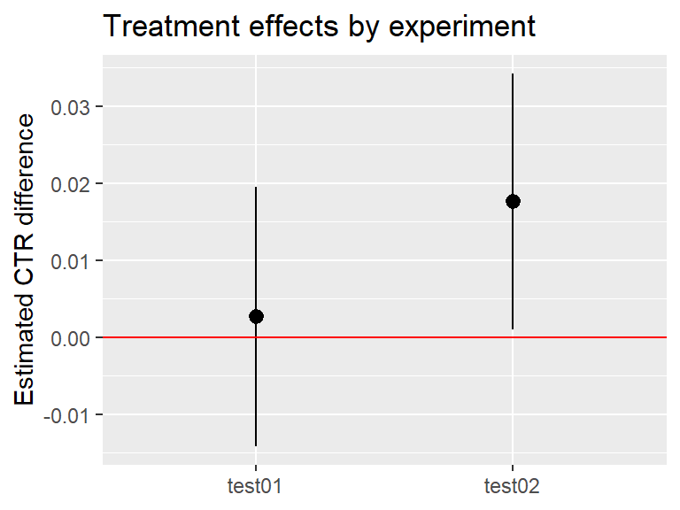

library(dplyr)
library(deltatest)
library(broom)
data <- deltatest::generate_dummy_data(2000) |>
mutate(group = if_else(group == 0, "control", "treatment")) |>
group_by(user_id, group) |>
summarise(clicks = sum(metric), pageviews = n(), .groups = "drop")
result <- deltatest(data, clicks / pageviews, by = group)
tidy(result)
#> # A tibble: 1 × 9
#> estimate mean_ctrl mean_treat statistic p.value conf.low conf.high method
#> <dbl> <dbl> <dbl> <dbl> <dbl> <dbl> <dbl> <chr>
#> 1 0.00269 0.246 0.249 0.314 0.753 -0.0141 0.0195 Two Sample…
#> # ℹ 1 more variable: alternative <chr>I’m happy to share a new release of deltatest.
This release includes two main changes:
- a new
tidy()method fordeltatestobjects - a fix for p-value calculation in one-sided tests
Before looking at what changed in this release, let’s briefly revisit the purpose of deltatest.
What deltatest is for
The deltatest package provides deltatest(), a function for performing two-sample Z-tests using the delta method.
It is designed for common settings in online A/B testing where:
- randomization is done at the user level, but
- the metric is measured at a finer unit such as page views or sessions.
In such settings, naive tests can underestimate uncertainty—for example, standard Z-tests, chi-squared tests, or tests for differences in proportions—because observations within a user are not independent. deltatest() addresses this issue by using a delta-method-based variance estimator.
# Install the released version from CRAN
install.packages("deltatest")
# Load packages
library(dplyr)
library(deltatest)
# Generate dummy data
data <- deltatest::generate_dummy_data(2000) |>
mutate(group = if_else(group == 0, "control", "treatment")) |>
group_by(user_id, group) |>
summarise(clicks = sum(metric), pageviews = n(), .groups = "drop")
# Run a test
deltatest(data, clicks / pageviews, by = group)Typical output:
#> Two Sample Z-test Using the Delta Method
#>
#> data: clicks/pageviews by group
#> Z = 0.31437, p-value = 0.7532
#> alternative hypothesis: true difference in means between control and treatment is not equal to 0
#> 95 percent confidence interval:
#> -0.01410593 0.01949536
#> sample estimates:
#> mean in control mean in treatment difference
#> 0.245959325 0.248654038 0.002694713What’s new in 0.2.0
tidy() support for deltatest objects
With this release, deltatest() results can now be converted directly into a tidy tibble with broom::tidy().
deltatest() returns an htest-class object, which is convenient for printing and interactive use. But in a tidyverse workflow, it is often much easier to work with results in a tidy tibble format. This makes it easier to combine results across many experiments or metrics, and to visualize patterns in estimates, confidence intervals, or p-values with tools like ggplot2.
First, here is a simple example of converting the result to a tidy format:
Next, here is an example of using the tidy results to compare multiple experiments in a plot:
library(ggplot2)
data2 <- deltatest::generate_dummy_data(2000, xi = 0.05) |>
mutate(group = if_else(group == 0, "control", "treatment")) |>
group_by(user_id, group) |>
summarise(clicks = sum(metric), pageviews = n(), .groups = "drop")
result2 <- deltatest(data2, clicks / pageviews, by = group)
result_tidy1 <- tidy(result) |> mutate(experiment_id = "test01")
result_tidy2 <- tidy(result2) |> mutate(experiment_id = "test02")
result_tidy <- bind_rows(result_tidy1, result_tidy2)
ggplot(result_tidy, aes(experiment_id, estimate)) +
geom_pointrange(aes(ymin = conf.low, ymax = conf.high)) +
geom_hline(yintercept = 0, color = "red") +
xlab(NULL) + ylab("Estimated CTR difference") +
ggtitle("Treatment effects by experiment")
Fix for one-sided p-value calculation
This release also fixes a bug in the p-value calculation for one-sided tests. In the previous version, p-values for one-sided tests could be incorrectly calculated using the two-sided formula. That behavior has now been fixed.
I would like to thank Kazuyuki Sano for reporting this issue and contributing to the fix.
Final thoughts
I’m glad to keep improving deltatest little by little. If you use R for online A/B experiments, I hope it is useful to you.
For more details, see:
- Package website: https://hoxo-m.github.io/deltatest/
- GitHub repository: https://github.com/hoxo-m/deltatest